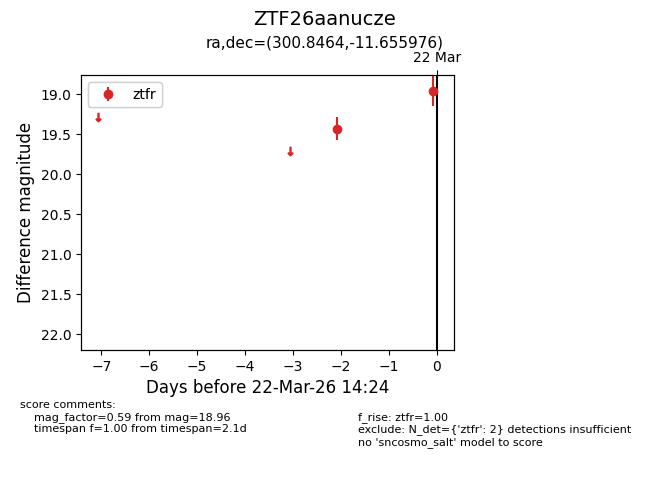
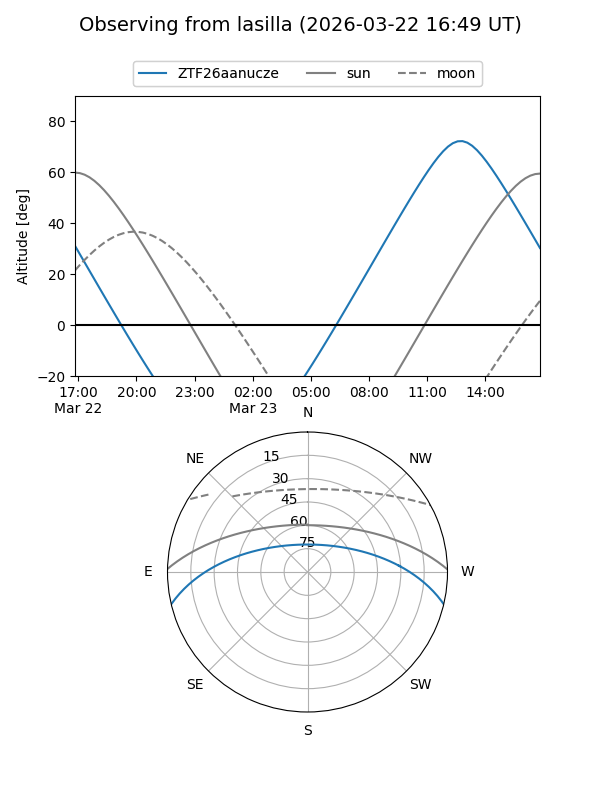
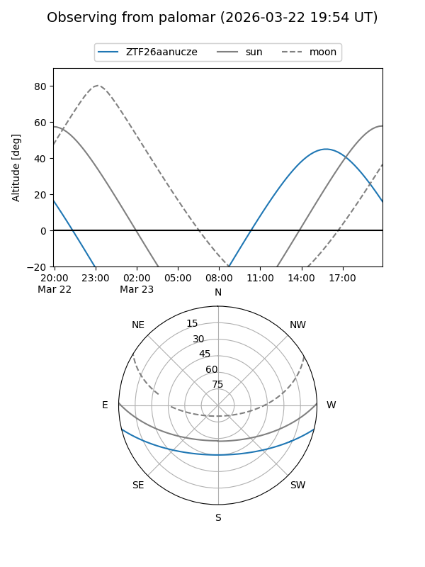
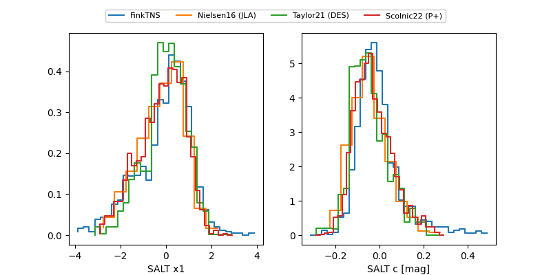

ZTF26aanucze
Target ZTF26aanucze at 2026-03-22 14:26
Aliases and brokers:
FINK: link
Lasair: link
ALeRCE: link
alt names
ZTF26aanucze (ztf,fink_ztf)
Coordinates:
equatorial (ra, dec) = 300.8464,-11.65598
equatorial (HMS+DMS) = 20:03:23.13,-11:39:21.52
galactic (l, b) = (30.3562,-21.17914)
Flags:
Photometry:
last ztfr=18.96
2 ztfr detections
Lightcurve

Visibility


Additional plots
